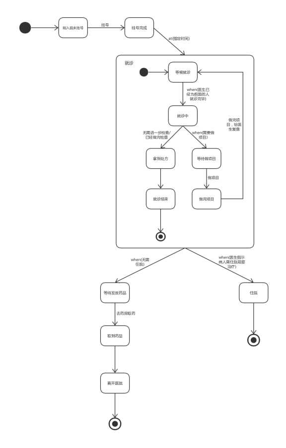
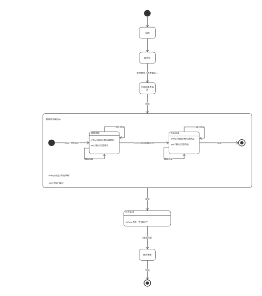
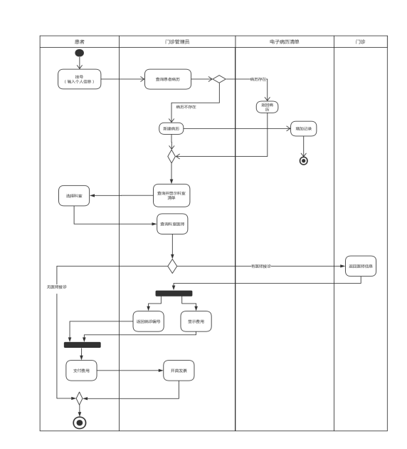
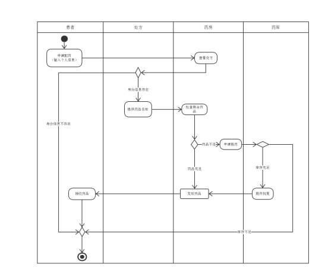

实验报告(第十组状态机图)
-------------------------------------------------------------
学生姓名:王若凡 学号:161810308
孙茜茹 161810101
方丹枫 161820304
陈楚燚 161830218
姜志杰 161830318
实验地点:计算机实验楼104
实验时间:2019/11/22
-------------------------------------------------------------
一.实验名称
校医院门诊管理系统 状态机图构建
二.实验目的
使用UML为校医院门诊管理系统构建状态机图
实验要求：
1）基于类图中的核心类（至少2个），构建其状态机图；
2）每个状态机图包含不少于5个状态（包括组合状态中的子状态）；
3）状态机图要清晰、明了、美观。
三.实验内容与步骤
实验内容 ：
1）面向之前构建的类图中的核心类，分析其状态特征；
2）对分析的结果进行建模，使用UML建模工具，构建状态机图；
3）针对所构建的状态机图，给出完整、详细的语言描述。
实验步骤：
1）根据已经画好的类图，从其中找出2个核心类；
2）明确该状态机图围绕哪个对象展开；
3）分析该对象可能处于的状态；
4）分析可能出现的组合状态；
5）确定状态之间转换的触发事件；
6）检查状态机图的完整性，以及与用况图，类图和顺序图逻辑上的一致性；
7）检查状态机图并写实验报告。
四.实验结果（模型规约说明 ）
1.状态机图
①患者的状态机图说明：
患者进入医院，先到门诊管理员处进行挂号，挂号完成到指定时间之后患者排队等待就诊。医生已经为前面的人检查完毕之后，患者进入就诊室就诊。如果患者需要做项目进行进一步检查的话，患者等待做项目，做完项目之后再等候就诊；如果患者无需做项目进行进一步检查或者已经做完检查之后，那么就可以拿到处方，结束就诊。如果医生指示病人需要住院观察治疗，那么患者住院，整个图结束；如果无需住院，那么患者等待发放药品，患者去药房取药，患者取到药品，离开医院，整个过程结束。
患者状态机图截图如下：

②医师的状态机图说明：
医师初始状态为空闲，然后进入接诊中状态。医师接受患者病历后，进入已调出患者病历状态。在诊断患者后，医师转移到状态书写电子病历中：医师点击“开始书写”进入该状态；医师点击”书写“书写项目”转移到状态项目选择，医师调出所有可选项目开始时该状态，该状态中医师可以增加项目或者减少项目，医师确认已选项目后退出状态；当患者的所有项目检查完毕，医师调出所有可选药品开始状态药品选择，医师可以增加药品或者减少药品，医师确认已选药品后退出该状态；医师确认后退出状态书写电子病历中。书写电子病历完成后医师点击“生成处方”进入状态处方生成。生成完毕后医师进入状态病历更新，病历更新完后状态图结束。
医师状态机图截图如下：

①挂号过程说明：
患者向门诊管理员挂号并输入个人信息，门诊管理员在电子病历清单中查找该患者病历是否存在，若不存在，则添加新纪录。门诊管理员通过病历，查询科室清单并供患者选择，患者选择完毕后门诊管理员再向门诊查询科室医师。若有医师接诊，门诊向门诊管理员返回医师信息，门诊管理员向患者返回就诊编号，同时显示费用，患者支付完费用后，门诊管理员开具发票，挂号成功；若无医师接诊，挂号失败。
挂号活动图截图如下：

②取药过程说明：
患者通过输入个人信息向药房取药。若身份信息不存在，则取药失败；若身份信息存在，药房根据处方提供的药品名称检查剩余药品数量，若剩余药品充足，则向患者返回药品，取药成功；若药品不足，药房向药库发出提药申请，若库存不足，则取药失败；若库存充足，将药品批复给药房，再返回给患者，取药成功。
取药活动图截图如下：

五．分析与总结
做软件的时候，我们总能遇到一些比较复杂的逻辑问题，而普通的流程图或者时序图对于对象和状态的解读缺乏直观的理解，这时候使用状态机图比较合适。状态机图能够对一个对象在它整个生命周期中所经历的状态进行建模。相较于流程图通过活动的先后顺序来展示流程（常人的线性思维方式）；状态机图从某个事物的状态变化角度来展示流程（面向对象语言程序员的思维方式）。